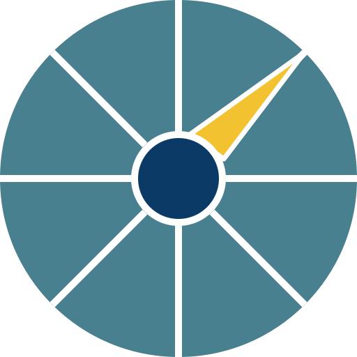

Solid Carbon 3D Explorer
Seafloor (to scale)
To scale
Seafloor (5× vertical)
5× vertical
CORK 1362A
Overview
Basement Layers
Layers
Injection site
Injection
Monitoring site
Monitoring
Wellhead
Site layout
Layout
Whole model
Whole
Show
Water
Sediment
Basement
On site now
Planned
Click a pin for details. Tools around the CORK show in
Site layout
.
Show pins
×
N
S
E
W